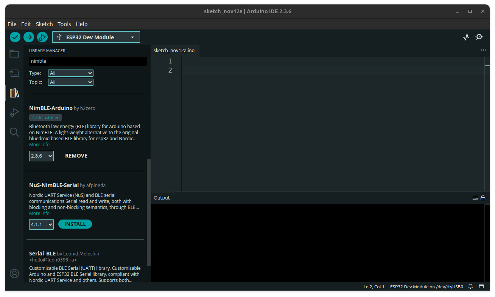
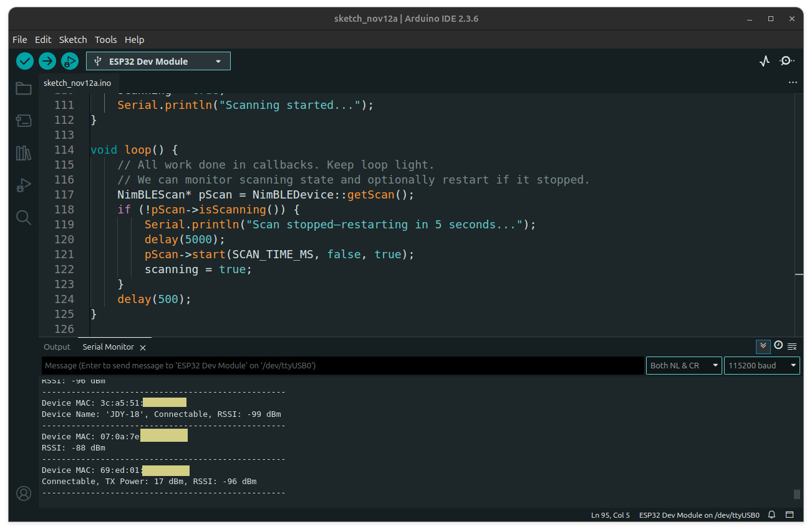
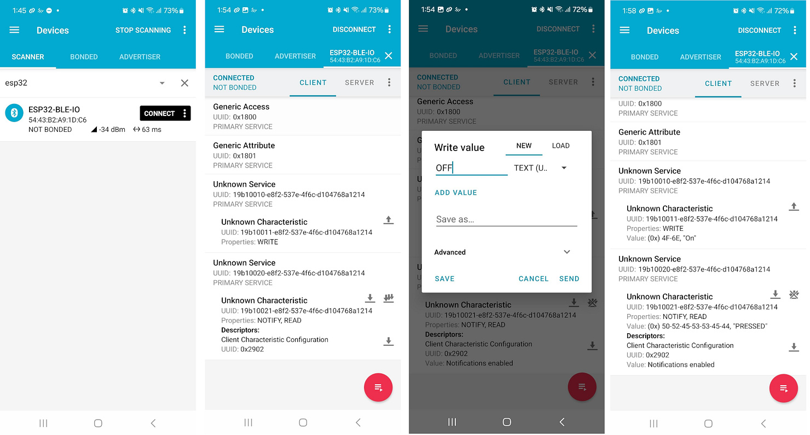
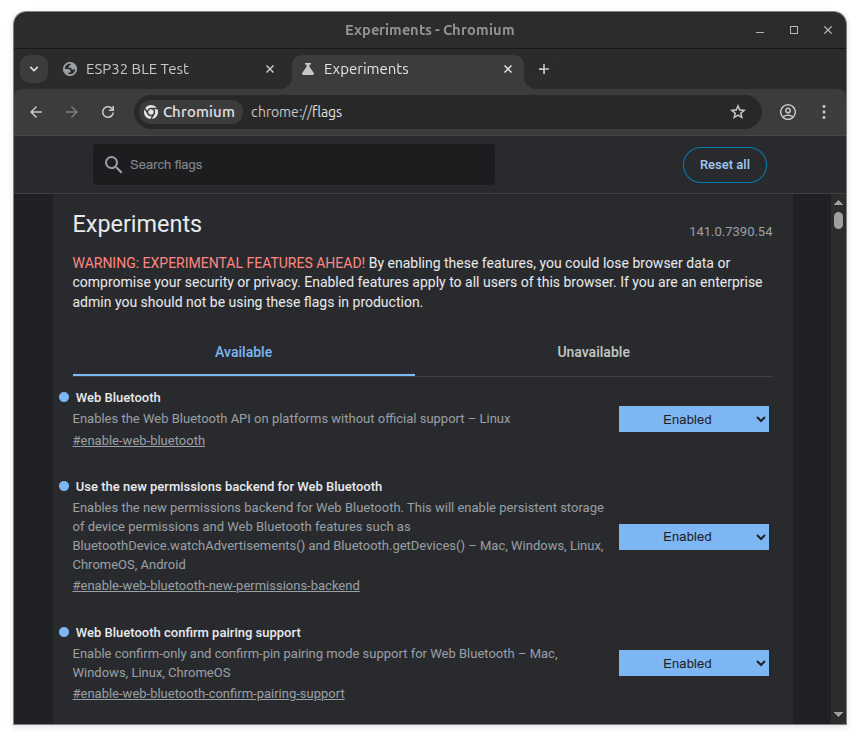
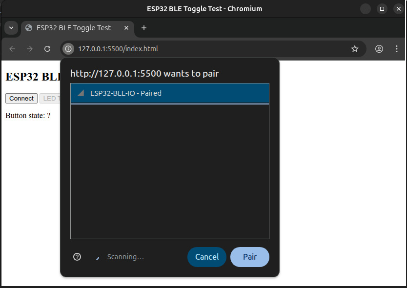

การเขียนโปรแกรม ESP32 เพื่อใช้งาน BLE ด้วยไลบรารี NimBLE-Arduino (ตอนที่ 1)#
- แนะนำ NimBLE-Arduino
- ตัวอย่างโค้ด: BLE Scanner
- ตัวอย่างโค้ด: BLE Server + Button & LED Service
- การทดลองด้วยแอป nRF Connect for Mobile
- การเชื่อมต่อเพื่อใช้บริการ BLE บนหน้าเว็บด้วย Chrome
▷ แนะนำ NimBLE-Arduino#
บทความนี้นำเสนอตัวอย่างการใช้งานไลบรารี NimBLE-Arduino สำหรับสื่อสารข้อมูลแบบไร้สายผ่าน Bluetooth Low Energy (BLE) โดยใช้บอร์ดไมโครคอนโทรลเลอร์ ESP32 / ESP32-C3
ในการเขียนโปรแกรมสำหรับชิป Espressif SoC เช่น ESP32 / ESP32-S3 เพื่อความสะดวก มักนิยมใช้ Arduino-ESP32 Core (C/C++) v3.3.x แทนการเขียนด้วย Espressif ESP-IDF SDK v5.5.x โดยตรง สำหรับงานด้าน BLE ทางบริษัท Espressif ได้พัฒนาไลบรารี ESP32-BLE มาให้ใช้งานอยู่แล้ว → ดูบทความที่เกี่ยวข้อง: "ตัวอย่างการเขียนโปรแกรมด้วย Arduino สำหรับใช้งาน ESP32 - Bluetooth LE"
อย่างไรก็ตาม อีกทางเลือกหนึ่งที่น่าสนใจคือการใช้ NimBLE-Arduino ซึ่งมีขนาดเล็กกว่า ประสิทธิภาพสูงกว่า และรองรับทั้งอุปกรณ์ตระกูล Espressif ESP32 และ Nordic Semiconductor nRF5x และหากใช้ Arduino IDE ก็จะต้องมีการติดตั้งไลบรารีใดังกล่าว ก่อนใช้งาน

รูป: การค้นหาและติดตั้งไลบรารี NimBLE-Arduino สำหรับ Arduino IDE
ตัวอย่างการใช้งาน BLE ด้วย NimBLE-Arduino
- การสแกนอุปกรณ์ (BLE Device Scanning): ตรวจสอบว่าในบริเวณรอบ ๆ มีอุปกรณ์ BLE ใด เปิดใช้งานอยู่ และประกาศบริการ (Advertising) อะไรบ้าง
- การทำงานในโหมด Peripheral (Server): ทำหน้าที่เป็นอุปกรณ์ให้บริการ เพื่อให้ BLE Central เข้ามาเชื่อมต่อและใช้งาน
- การทำงานในโหมด Central (Client): เชื่อมต่อไปยังอุปกรณ์ BLE Peripheral เพื่อเข้าถึงบริการที่ประกาศไว้
▷ ตัวอย่างโค้ด: BLE Scanner#
โค้ดตัวอย่างนี้แสดงการใช้งาน NimBLE-Arduino สำหรับสแกนอุปกรณ์ BLE รอบ ๆ ตัวบอร์ด
รองรับบอร์ด ESP32 / ESP32-S3 / ESP32-C3 และทดสอบบน Arduino ESP32 Core
/*
* Arduino ESP32 Core v3.3.3
* BLE scanner using NimBLE-Arduino v2.3.6
* Target: ESP32 / ESP32-C3
* Library: https://github.com/h2zero/NimBLE-Arduino
*/
#include <Arduino.h>
#include <NimBLEDevice.h>
#define LED_ON (LOW)
#define LED_OFF (!LED_ON)
#define LED_PIN (22) // GPIO-22
static constexpr uint32_t SCAN_TIME_MS = 5 * 1000; // 5 seconds scan time (ms)
volatile boolean scanning = false;
// Scan callback class (uses NimBLEScanCallbacks API)
class ScanCallbacks : public NimBLEScanCallbacks {
/** Called when a device is initially discovered (advertisement packet). */
void onDiscovered( const NimBLEAdvertisedDevice* advertisedDevice ) override {
digitalWrite( LED_PIN, LED_ON );
delay(10);
digitalWrite( LED_PIN, LED_OFF );
}
/**
* Called when a scan result is available. If active scanning is enabled
* this contains scan response data as well.
*/
void onResult(const NimBLEAdvertisedDevice* advertisedDevice) override {
// Optional: Blink LED when device is seen
// Print MAC address
Serial.printf( "Device MAC: %s\n",
advertisedDevice->getAddress().toString().c_str() );
// Print device name if present
if (advertisedDevice->haveName()) {
Serial.printf( "Device Name: '%s', ",
advertisedDevice->getName().c_str() );
}
// Print if device is connectable
if (advertisedDevice->isConnectable()) {
Serial.printf( "Connectable, " );
}
// Print TX power if advertised
if (advertisedDevice->haveTXPower()) {
Serial.printf( "TX Power: %d dBm, ",
advertisedDevice->getTXPower() );
}
Serial.printf( "RSSI: %d dBm\n", advertisedDevice->getRSSI() );
Serial.printf( "--------------------------------------------------\n" );
}
/**
* Called when the scan ends. The example restarts scanning here.
* 'reason' is implementation-dependent; we print it for debugging.
*/
void onScanEnd(const NimBLEScanResults& results, int reason) override {
// results.getCount() should be 0 (no scan result stored)
printf("BLE Scan ended.");
scanning = false;
}
} scanCallbacks;
void setup() {
// Initialize Serial
Serial.begin(115200);
Serial.flush();
// Setup LED pin
pinMode( LED_PIN, OUTPUT );
digitalWrite( LED_PIN, LED_OFF );
Serial.println( "\n\nNimBLE continuous scanner..." );
// Initialize NimBLE stack (empty name for scanner-only)
NimBLEDevice::init("");
// Acquire scan object
NimBLEScan* pBLEScan = NimBLEDevice::getScan();
// Set callback
pBLEScan->setScanCallbacks( &scanCallbacks, false /*filter duplicates*/ );
// Scan every 60 ms (interval = 60 / 0.625 = 96 units)
pBLEScan->setInterval( 96 );
// Scan duration within that interval: 30 ms
// (window = 30 / 0.625 = 48 units)
pBLEScan->setWindow( 48 );
// Active scan requests scan response packets
// (more info, but uses more airtime)
pBLEScan->setActiveScan( true );
// Do not store results inside NimBLEScan; rely on callbacks instead.
// setMaxResults(0) means unlimited / don't stash results internally.
pBLEScan->setMaxResults( 0 );
// Start scanning (duration in ms, continue=false, restart=true)
pBLEScan->start( SCAN_TIME_MS /*scan duration*/,
false /*continue*/, true /*restart*/ );
scanning = true;
Serial.println( "Scanning started..." );
}
void loop() {
// Monitor scanning state and optionally restart if it stopped.
NimBLEScan* pScan = NimBLEDevice::getScan();
if (!pScan->isScanning()) {
Serial.println( "Scan stopped-restarting in 5 seconds..." );
delay(5000);
pScan->start( SCAN_TIME_MS, false, true );
scanning = true;
}
delay(100);
}
แนวคิดหลักของโค้ดตัวอย่าง#
- ใช้คลาส
NimBLEDeviceเพื่อเริ่มต้นระบบ BLE Stack - ใช้คลาส
NimBLEScanสำหรับจัดการการสแกนอุปกรณ์ BLE - สร้างและใช้คลาสย่อย
ScanCallbacksเพื่อรับเหตุการณ์ต่าง ๆ ขณะสแกน และมีฟังก์ชันที่เกี่ยวข้อง เช่น- พบอุปกรณ์ (
onDiscovered) - ได้ผลลัพธ์การสแกน (
onResult) - การสแกนสิ้นสุดลง (
onScanEnd)
- พบอุปกรณ์ (
- ใช้ LED ที่ขา GPIO-22 กระพริบสั้น ๆ เพื่อแสดงว่าพบอุปกรณ์ BLE ใหม่
- ใช้ Callback-based Scanning (ไม่บันทึกผลลัพธ์ไว้ภายใน) เพื่อประหยัดหน่วยความจำ
ฟังก์ชันสำคัญของ NimBLE ที่ใช้ในโค้ดตัวอย่าง#
NimBLEDevice::init("")ใช้เริ่มต้น BLE Stack และใส่ชื่ออุปกรณ์ได้ (กรณีทำหน้าที่เป็น Peripheral)NimBLEDevice::getScan()คืนค่าพอยน์เตอร์ (Pointer) ไปยังอ็อบเจ็กต์NimBLEScanเพื่อควบคุมการสแกน BLE แล้วอ้างอิงโดยตัวแปรpBLEScanpBLEScan->setScanCallbacks(&scanCallbacks, false)เชื่อมต่อคลาส Callback (ScanCallbacks) เพื่อรับเหตุการณ์ระหว่างสแกน ไม่กรองอุปกรณ์ซ้ำpBLEScan->setInterval(96)ตั้งค่าช่วงเวลา Scan Interval (หน่วย 0.625 ms) ค่า 96 = 60 ms (รอบสแกนต่อเนื่องทุก 60 มิลลิวินาที)pBLEScan->setWindow(48)ตั้งค่าช่วงเวลาที่สแกนในแต่ละรอบ (หน่วย 0.625 ms) ค่า 48 = 30 ms (สแกนจริง 30 ms จากทุก ๆ 60 ms ของรอบ)pBLEScan->setActiveScan(true)เปิดโหมด Active Scan เพื่อร้องขอข้อมูลเพิ่มเติมจากอุปกรณ์ที่พบ (ได้ข้อมูลมากขึ้น เช่น ชื่ออุปกรณ์ แต่ใช้พลังงานมากขึ้น)pBLEScan->setMaxResults(0)ไม่จำกัดจำนวนผลลัพธ์ ไม่เก็บผลลัพธ์ไว้ในหน่วยความจำภายในpBLEScan->start(SCAN_TIME_MS, false, true)เริ่มการสแกน BLE โดยมีพารามิเตอร์:SCAN_TIME_MSระยะเวลาสแกน (5 วินาที)falseไม่ให้ต่อเนื่องอัตโนมัติtrueให้รีสตาร์ทสแกนใหม่เมื่อสิ้นสุด
การทำงานฟังก์ชัน Callback ที่เกี่ยวข้อง#
onDiscovered(const NimBLEAdvertisedDevice* advertisedDevice)ถูกเรียกเมื่อพบอุปกรณ์ BLE ครั้งแรกonResult(const NimBLEAdvertisedDevice* advertisedDevice)ถูกเรียกเมื่อได้ผลลัพธ์การสแกน (รวม Scan Response ถ้ามี) เช่น แสดงข้อมูลอุปกรณ์ เช่น MAC Address, RSSI, TX Power และความสามารถในการเชื่อมต่อได้onScanEnd(const NimBLEScanResults& results, int reason)ถูกเรียกเมื่อการสแกนสิ้นสุดลง ใช้ตรวจสอบสถานะและเริ่มการสแกนใหม่
ดูเอกสาร Online Doc / NimBLE-Arduino API เพื่อศึกษารายละเอียดการใช้คำสั่ง

รูป: ตัวอย่างข้อความเอาต์พุตที่ได้จากบอร์ด ESP32 เมื่อทดลองด้วยโค้ดตัวอย่าง
▷ ตัวอย่างโค้ด: BLE Server + Button & LED Service#
โค้ดนี้เป็นตัวอย่างการสร้าง BLE Server บนบอร์ด ESP32 โดยใช้ไลบรารี NimBLE-Arduino ทำหน้าที่รับคำสั่งจาก BLE Client เพื่อควบคุมแอลอีดี (LED) และส่งสถานะของปุ่ม (Button) กลับไปยัง BLE Client แบบ Notify
เมื่อรันโค้ดตัวอย่างนี้ จะทำให้บอร์ด ESP32 จะเริ่มโฆษณาการบริการ (BLE Services)
ภายใต้ชื่อ "ESP32-BLE-IO" และทำให้ซอฟต์แวร์ที่ทำหน้าที่เป็น BLE Client
เช่น ซอฟต์แวร์ nRF Connect หรือ LightBlue จะเห็นอุปกรณ์นี้ ซึ่งมีสองบริการ ดังนี้
- LED Service: ถ้าส่งข้อความ
"ON"หรือ"OFF"ก็สามารถควบคุมสถานะของ LED ได้ - Button Service: สามารถอ่านค่าของปุ่มกด หรือรับการแจ้งเตือน (Notify) เมื่อปุ่มถูกกดหรือปล่อย
#include <Arduino.h>
#include <NimBLEDevice.h>
// LED and Button pin definitions
#define LED_ON (LOW) // LED is active-low: writing LOW turns it on
#define LED_OFF (!LED_ON)
#define LED_PIN (22) // Onboard LED pin
#define BUTTON_PIN (14) // Push button pin (active-low)
// BLE Server and Characteristics pointers
NimBLEServer* pServer = nullptr;
NimBLECharacteristic* pLedCharacteristic = nullptr;
NimBLECharacteristic* pButtonCharacteristic = nullptr;
// Global state variables
bool deviceConnected = false; // Tracks if a BLE client is connected
bool lastButtonState = HIGH; // Tracks the button state for change detection
/* UUID definitions for BLE services and characteristics */
#define SERVICE_LED_UUID "19b10010-e8f2-537e-4f6c-d104768a1214"
#define CHARACTERISTIC_LED_UUID "19b10011-e8f2-537e-4f6c-d104768a1214"
#define SERVICE_BUTTON_UUID "19b10020-e8f2-537e-4f6c-d104768a1214"
#define CHARACTERISTIC_BUTTON_UUID "19b10021-e8f2-537e-4f6c-d104768a1214"
// BLE Server callback class
class ServerCallbacks : public NimBLEServerCallbacks {
void onConnect( NimBLEServer* pServer,
NimBLEConnInfo& connInfo ) override {
deviceConnected = true;
Serial.printf( "Client connected: %s\n",
connInfo.getAddress().toString().c_str() );
// Optional: adjust connection parameters
// (min interval, max interval, latency, timeout)
// Min. connection interval = 24 × 1.25 ms = 30 ms.
// Max. connection interval = 48 × 1.25 ms = 60 ms.
// Connection timeout = 180 × 10 ms = 1800 ms (1.8 s).
pServer->updateConnParams( connInfo.getConnHandle(), 24, 48, 0, 180 );
}
void onDisconnect( NimBLEServer* pServer,
NimBLEConnInfo& connInfo, int reason ) override {
deviceConnected = false;
Serial.printf( "Client disconnected (%d), restarting advertising.\n", reason );
// Restart advertising so new clients can connect
NimBLEDevice::startAdvertising();
}
};
// LED characteristic write callback class
class LedCharacteristicCallbacks : public NimBLECharacteristicCallbacks {
void onWrite( NimBLECharacteristic* pCharacteristic,
NimBLEConnInfo& connInfo ) override {
std::string value = pCharacteristic->getValue(); // Read the written value
if (!value.empty()) {
String cmd = String( value.c_str() ); // Convert to Arduino String
cmd.toUpperCase(); // Convert command to uppercase
if (cmd.equals("ON")) {
digitalWrite( LED_PIN, LED_ON ); // Turn LED on
Serial.println( "LED ON" );
}
else if (cmd.equals("OFF")) {
digitalWrite( LED_PIN, LED_OFF ); // Turn LED off
Serial.println( "LED OFF" );
}
else {
Serial.printf( "Unknown LED command: %c\n", cmd );
}
}
}
};
void setup() {
Serial.begin( 115200 ); // Initialize Serial
Serial.setDebugOutput( false );
Serial.flush();
Serial.println( "\n\n\nESP32-BLE server demo" );
Serial.println( "Arduino-ESP32 v3.3.0 + NimBLE v2.3.6)..." );
// Configure GPIO pins
pinMode( LED_PIN, OUTPUT );
pinMode( BUTTON_PIN, INPUT_PULLUP ); // Button with internal pull-up
// Initialize BLE device
NimBLEDevice::init( "ESP32 BLE-IO (LED-Button) Service" );
// Create BLE server and set callbacks
pServer = NimBLEDevice::createServer();
pServer->setCallbacks( new ServerCallbacks() );
// LED Service
NimBLEService* ledService = pServer->createService( SERVICE_LED_UUID );
// Create LED characteristic (write-only)
pLedCharacteristic = ledService->createCharacteristic(
CHARACTERISTIC_LED_UUID,
NIMBLE_PROPERTY::WRITE
);
pLedCharacteristic->setCallbacks( new LedCharacteristicCallbacks() );
ledService->start();
// Button Service
NimBLEService* buttonService = pServer->createService( SERVICE_BUTTON_UUID );
// Create Button characteristic (read + notify)
pButtonCharacteristic = buttonService->createCharacteristic(
CHARACTERISTIC_BUTTON_UUID,
NIMBLE_PROPERTY::READ | NIMBLE_PROPERTY::NOTIFY
);
pButtonCharacteristic->setValue( "RELEASED" ); // Initial state: released
buttonService->start();
// Start BLE advertising
NimBLEAdvertising* advertising = NimBLEDevice::getAdvertising();
advertising->setName( "ESP32-BLE-IO" );
advertising->addServiceUUID( SERVICE_LED_UUID );
advertising->addServiceUUID( SERVICE_BUTTON_UUID );
advertising->enableScanResponse( true );
advertising->start();
Serial.println( "BLE advertising started..." );
// Flash LED 3 times on startup
for (int i = 0; i < 3; i++) {
digitalWrite( LED_PIN, LED_ON );
delay( 100 );
digitalWrite( LED_PIN, LED_OFF );
delay( 100 );
}
}
void loop() {
// Read button state (active-low)
bool buttonState = digitalRead( BUTTON_PIN );
// Detect state change
if (buttonState != lastButtonState) {
lastButtonState = buttonState;
// Update characteristic value: "PRESSED" or "RELEASED"
String val = buttonState ? "RELEASED" : "PRESSED";
pButtonCharacteristic->setValue( val.c_str() );
// Notify connected client
if (deviceConnected) {
pButtonCharacteristic->notify();
}
// Print state to Serial
Serial.printf( "Button: %s\n", val.c_str() );
}
delay(100);
}
ภาพรวมการทำงานของโค้ดตัวอย่าง#
- เริ่มต้นระบบการทำงานของ BLE
- ใช้คำสั่ง
NimBLEDevice::init(...)เพื่อเริ่มต้น BLE Stack และตั้งชื่ออุปกรณ์เป็น"ESP32 BLE-IO"
- ใช้คำสั่ง
- สร้าง BLE Server
- ใช้
NimBLEDevice::createServer()เพื่อสร้าง BLE Server ที่จะให้บริการ - กำหนดฟังก์ชัน Callback ผ่านคลาส
ServerCallbacksสำหรับจัดการเหตุการณ์ เช่นonConnect()เมื่อ Client เชื่อมต่อเข้ามาonDisconnect()เมื่อ Client ยกเลิกหรือตัดการเชื่อมต่อ (จะเริ่มโฆษณาใหม่โดยอัตโนมัติ)
- ใช้
- สร้างบริการแยกตามการทำงาน
- LED Service (UUID:
19b10010-e8f2-537e-4f6c-d104768a1214)- มีการกำหนด Service Characteristic สำหรับเขียนคำสั่ง (
WRITE) ใช้ควบคุม LED (ON/OFF)
- มีการกำหนด Service Characteristic สำหรับเขียนคำสั่ง (
- Button Service (UUID:
19b10020-e8f2-537e-4f6c-d104768a1214)- มีการกำหนด Service Characteristic สำหรับอ่านสถานะ (
READ) และแจ้งเตือน (NOTIFY) โดยจะส่งข้อความ"PRESSED"หรือ"RELEASED"ให้กับ Client
- มีการกำหนด Service Characteristic สำหรับอ่านสถานะ (
- LED Service (UUID:
- เริ่มการโฆษณา (BLE Advertising)
- ตั้งชื่ออุปกรณ์เป็น
"ESP32-BLE-IO" - เพิ่ม Service UUID ทั้งสอง ในแพ็กเกจโฆษณา
- เริ่มโฆษณาเพื่อรอการเชื่อมต่อจาก BLE Client
- ตั้งชื่ออุปกรณ์เป็น
- ในฟังก์ชัน
loop()- อ่านสถานะปุ่มจากขา GPIO-14 (active-low)
- เมื่อสถานะเปลี่ยน จะอัปเดตค่าใน Characteristic ของปุ่มกด
- ถ้ามี BLE Client เชื่อมต่อ จะส่งค่าไปให้ผ่านฟังก์ชัน
notify()และแสดงสถานะปุ่ม (PRESSED/RELEASED) ผ่าน Serial Monitor
ฟังก์ชันสำคัญที่ใช้ในโค้ด#
NimBLEDevice::init(name)เริ่มต้น BLE Stack และตั้งชื่ออุปกรณ์NimBLEDevice::createServer()สร้าง BLE Server สำหรับให้บริการcreateService(UUID)สร้าง BLE Service ด้วย UUID ที่กำหนดcreateCharacteristic(UUID, properties)สร้าง BLE Characteristic พร้อมกำหนดคุณสมบัติ (เช่นREAD,WRITE,NOTIFY)setCallbacks(...)กำหนดคลาส Callback สำหรับจัดการเหตุการณ์ (เขียนค่า, เชื่อมต่อ, ตัดการเชื่อมต่อ)setValue(value)/notify()ใช้กำหนดค่าและแจ้งเตือน (Notify) ไปยัง BLE ClientNimBLEDevice::startAdvertising()เริ่มโฆษณาเพื่อให้ BLE Client เข้ามาเชื่อมต่อ
การทำงานของฟังก์ชัน Callback
ServerCallbacksonConnect()ถูกเรียกเมื่อ BLE Client เชื่อมต่อเข้ามาonDisconnect()ถูกเรียกเมื่อ BLE Client ออกจากการเชื่อมต่อ และรีสตาร์ทการโฆษณาใหม่
LedCharacteristicCallbacksonWrite()ถูกเรียกเมื่อ BLE Client เขียนค่ามายัง LED Characteristic ("ON" หรือ"OFF")
▷ การทดลองด้วยแอป nRF Connect for Mobile#
ขั้นตอนถัดไปคือการใช้แอป nRF Connect for Mobile (จากบริษัท Nordic Semiconductor)
เพื่อยืนยันการทำงานของบริการ (Service) และลักษณะข้อมูล (Characteristic) ที่อุปกรณ์ได้เปิดให้ใช้งานจริง
จุดประสงค์ของการทดสอบด้วย nRF Connect
- ตรวจสอบว่า ESP32 ประกาศชื่อและบริการ BLE ได้ถูกต้อง
- ทดสอบการอ่านหรือเขียนค่าจาก Service Characteristic โดยตรง
- ตรวจสอบว่า Service Characteristic สำหรับปุ่มส่ง การแจ้งเตือน (Notify) ได้ตามที่คาดไว้
- ตรวจสอบโครงสร้าง UUID ของ Service และ Characteristic
ขั้นตอนการใช้งานเบื้องต้น
- เปิดแอป nRF Connect for Mobile บนสมาร์ทโฟน (Android / iOS)
- เปิด Bluetooth บนอุปกรณ์ แล้วกด SCAN เพื่อค้นหาอุปกรณ์ BLE รอบตัว
- มองหาอุปกรณ์ชื่อ
ESP32-BLE-IOแล้วกด CONNECT เพื่อเชื่อมต่อ - แอปจะแสดงรายชื่อ Services และ Characteristics ที่ ESP32 เปิดให้ใช้งาน เช่น
19B10010-E8F2-537E-4F6C-D104768A1214(LED Service)19B10020-E8F2-537E-4F6C-D104768A1214(Button Service)- ทดสอบการส่งหรือรับข้อมูล
- เลือก LED Characteristic แล้วกด WRITE แล้วพิมพ์ส่งค่า
"ON"หรือ"OFF"เพื่อควบคุม LED - เปิด Notifications บน Button Characteristic แล้วลองกดปุ่มจริงบนบอร์ด
จะเห็นข้อความ"PRESSED"/"RELEASED"แสดงบนหน้าจอ

รูป: ตัวอย่างการเชื่อมต่อด้วย nRF Connect for Mobile บนสมาร์ทโฟน
▷ การเชื่อมต่อเพื่อใช้บริการ BLE บนหน้าเว็บด้วย Chrome#
ถัดไปเป็นตัวอย่างโค้ด HTML + JavaScript สาธิตการทำงานของ Web Bluetooth Application ในเบื้องต้น ใช้สำหรับทดสอบและสาธิตการสื่อสาร BLE ระหว่างเว็บเบราว์เซอร์ Google Chrome กับบอร์ด ESP32 ซึ่งทำหน้าที่เป็น BLE Server ที่มี LED Service และ Button Service ตามตัวอย่างโค้ดที่แล้ว
วัตถุประสงค์ของการทดสอบ#
- แสดงการเชื่อมต่อ ESP32 BLE Server ผ่าน Web Bluetooth API
- ส่งคำสั่งควบคุม LED (ON / OFF) ผ่าน LED Characteristic แบบ
WRITE - อ่านและรับการแจ้งเตือน (Notify) จากปุ่มกดบนบอร์ด ESP32
- สาธิตการอัปเดตสถานะเรียลไทม์บนหน้าเว็บ โดยไม่ต้องใช้แอปมือถือ

รูป: เปิดใช้งาน Web Bluetooth Experimental Feature ใน Google Chrome Browser (ไปที่ chrome://flags)
ลำดับการทำงานของโค้ดตัวอย่างโดยสรุป#
- เมื่อกดปุ่ม "Connect"
- เว็บเพจจะค้นหาอุปกรณ์ BLE ที่ชื่อขึ้นต้นด้วย
"ESP32-BLE-IO" - เมื่อเลือกอุปกรณ์แล้ว จะเชื่อมต่อไปยัง GATT Server ที่ให้บริการโดย ESP32
- เว็บเพจจะค้นหาอุปกรณ์ BLE ที่ชื่อขึ้นต้นด้วย
- หลังจากเชื่อมต่อสำเร็จ
- ดึงข้อมูล LED Service และ Button Service
- ติดต่อกับ Service Characteristic แต่ละบริการ
- เริ่มรับการแจ้งเตือนจากปุ่มกดบนบอร์ด ESP32
- เมื่อปุ่มบนบอร์ด ESP32 ถูกกดหรือปล่อย
- ESP32 จะส่งข้อความ
"PRESSED"หรือ"RELEASED" - เว็บเพจจะอัปเดตค่าบนหน้าจอ (
Button state: ...) แบบเรียลไทม์
- ESP32 จะส่งข้อความ
- ปุ่ม "LED Toggle"
- ใช้สลับสถานะของ LED ระหว่าง
"ON"และ"OFF" - เมื่อกดแล้ว จะส่งข้อความไปยัง ESP32 ผ่าน LED Characteristic
- ปุ่มจะอัปเดตข้อความแสดงสถานะล่าสุด (
LED ON/LED OFF)
- ใช้สลับสถานะของ LED ระหว่าง
- ปุ่ม "Disconnect"
- เมื่อเชื่อมต่ออยู่และกดอีกครั้ง จะตัดการเชื่อมต่อ BLE
- รีเซ็ตสถานะ UI และปิดการใช้งานปุ่มควบคุม
File: index.html
<!DOCTYPE html>
<html>
<head>
<meta charset="utf-8">
<title>ESP32 BLE Toggle Test</title>
</head>
<body>
<h2>ESP32 BLE Web Toggle</h2>
<button id="connectBtn">Connect</button>
<button id="ledBtn" disabled>LED Toggle</button>
<p>Button state: <span id="btnState">?</span></p>
<script>
// UUIDs for ESP32 BLE services and characteristics
const SERVICE_LED = "19b10010-e8f2-537e-4f6c-d104768a1214"; // LED service
const CHAR_LED = "19b10011-e8f2-537e-4f6c-d104768a1214"; // LED characteristic (write)
const SERVICE_BTN = "19b10020-e8f2-537e-4f6c-d104768a1214"; // Button service
const CHAR_BTN = "19b10021-e8f2-537e-4f6c-d104768a1214"; // Button characteristic (read/notify)
// Variables to store device, GATT server, and characteristics
let device, server, ledChar, btnChar;
let ledState = false; // Track LED state: false = OFF, true = ON
// DOM elements for buttons
const connectBtn = document.getElementById("connectBtn");
const ledBtn = document.getElementById("ledBtn");
// Connect / Disconnect button click handler
connectBtn.onclick = async () => {
// If already connected, disconnect and reset UI
if (device && device.gatt.connected) {
await device.gatt.disconnect(); // Disconnect from BLE device
connectBtn.textContent = "Connect"; // Update button text
ledBtn.disabled = true; // Disable LED toggle button
document.getElementById("btnState").textContent = "?"; // Reset button state display
console.log("Disconnected");
return;
}
try {
// Request device with filters: name prefix + advertised service
device = await navigator.bluetooth.requestDevice({
filters: [{ namePrefix: 'ESP32-BLE-IO', services: [SERVICE_LED] }],
optionalServices: [SERVICE_LED, SERVICE_BTN] // Required to access both services
});
server = await device.gatt.connect(); // Connect to GATT server
// Get LED characteristic from LED service
const ledService = await server.getPrimaryService(SERVICE_LED);
ledChar = await ledService.getCharacteristic(CHAR_LED);
// Get Button characteristic from Button service
const btnService = await server.getPrimaryService(SERVICE_BTN);
btnChar = await btnService.getCharacteristic(CHAR_BTN);
// Subscribe to button notifications
await btnChar.startNotifications(); // Enable notifications
btnChar.addEventListener('characteristicvaluechanged', e => {
const val = new TextDecoder().decode(e.target.value); // Decode value
document.getElementById("btnState").textContent = val; // Update UI
});
// Read initial button state immediately after connecting
const initVal = await btnChar.readValue();
document.getElementById("btnState").textContent = new TextDecoder().decode(initVal);
// Update UI to show connected state
connectBtn.textContent = "Disconnect";
ledBtn.disabled = false; // Enable LED toggle
console.log("Connected to ESP32 BLE!");
} catch (err) {
console.error(err); // Log any errors
}
};
// LED toggle button click handler
ledBtn.onclick = async () => {
if (!ledChar) return; // Exit if characteristic not available
const cmd = ledState ? "OFF" : "ON"; // Toggle command
await ledChar.writeValue(new TextEncoder().encode(cmd)); // Write command to characteristic
ledState = !ledState; // Update local LED state
ledBtn.textContent = ledState ? "LED ON" : "LED OFF"; // Update button text
};
</script>
</body>
</html>


รูป: ตัวอย่างหน้าเว็บแสดงการเชื่อมต่อกับอุปกรณ์ ESP32 ด้วย BLE
รูปตัวอย่างเป็นการเปิดใช้งาน Local Web Server
ผู้ใช้สามารถติดตั้ง Live Server Extension ใน VS Code IDEโดยคลิกขวาที่ index.html แล้วเลือก
"Open with Live Server" เบราว์เซอร์จะเปิดขึ้นและรันไฟล์บน localhost
▷ กล่าวสรุป#
บทความนี้แนะนำการใช้งาน BLE (Bluetooth Low Energy) บนบอร์ด ESP32 / ESP32-S3 ผ่านไลบรารี NimBLE-Arduino โดยตัวอย่างโค้ดครอบคลุมทั้งการสแกนอุปกรณ์ BLE และการสร้าง BLE Server ที่ให้บริการควบคุม LED และอ่านสถานะปุ่มกด (Button) ผ่าน BLE Characteristic มีการใช้ฟังก์ชัน Callback ในการจัดการเหตุการณ์ต่าง ๆ เช่น การเชื่อมต่อ/ตัดการเชื่อมต่อ และการเขียนค่าไปยัง Characteristic ทั้งนี้ยังมีตัวอย่างการทดลองเชื่อมต่อผ่านแอป nRF Connect for Mobile
นอกจากนี้ บทความยังสาธิตการเชื่อมต่อ BLE กับเว็บเบราว์เซอร์ Google Chrome ผ่าน Web Bluetooth API โดยสร้างหน้าเว็บ HTML + JavaScript ที่สามารถเชื่อมต่อกับ ESP32 BLE Server เพื่อ อ่านสถานะปุ่มแบบเรียลไทม์ (Notify) และ ควบคุม LED ซึ่งช่วยให้ผู้ใช้งานสามารถทดลองสื่อสารกับอุปกรณ์ BLE ได้โดยไม่ต้องใช้แอปมือถือ ทำให้การพัฒนาและทดสอบอุปกรณ์ BLE มีความยืดหยุ่นและสะดวกขึ้นทั้งบนมือถือและเว็บเบราว์เซอร์
บทความที่เกี่ยวข้อง
- ตัวอย่างการเขียนโปรแกรมด้วย Arduino สำหรับใช้งาน ESP32 - Bluetooth LE
- แนะนำการใช้งาน Zephyr RTOS แบบ CLI: ทดลองใช้งาน Micro:bit v2 BLE
This work is licensed under a Creative Commons Attribution-ShareAlike 4.0 International License.
Created: 2026-01-20 | Last Updated: 2026-01-20